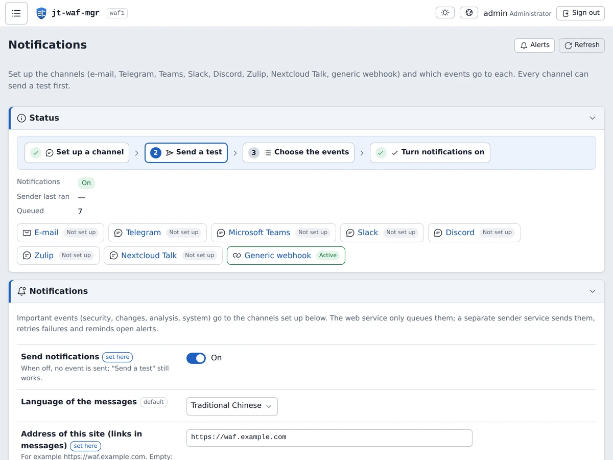

openssl dgst -sha256 -verify release-key.pem -signature jt-waf-mgr-0.4.21.tar.gz.sig jt-waf-mgr-0.4.21.tar.gz tar xzf jt-waf-mgr-0.4.21.tar.gz && cd jt-waf-mgr-0.4.21 sudo ./install.sh sudo jt-waf-mgr check sudo jt-waf-mgr user add alice --role admin
sudo ./upgrade.sh --check sudo ./upgrade.sh sudo ./upgrade.sh --rollback
sudo ./uninstall.sh sudo ./uninstall.sh --purge